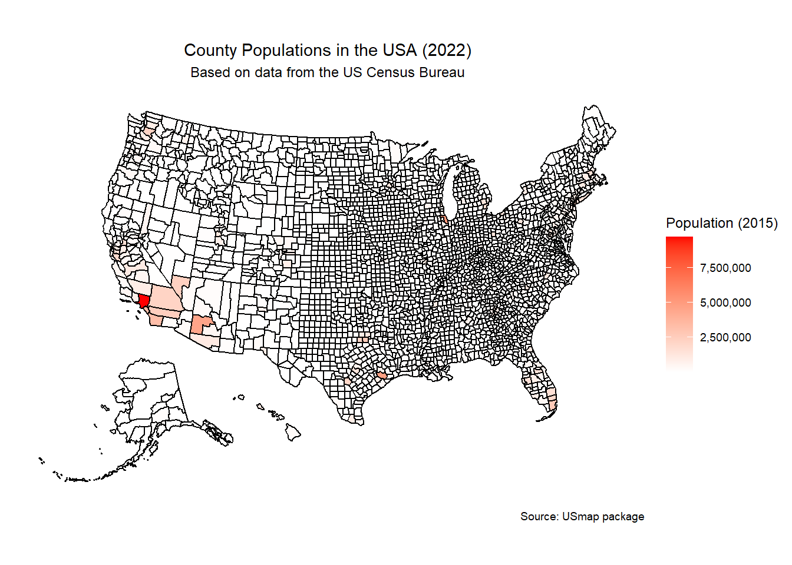

Code
# Load necessary libraries
library(usmap)
library(tidyverse)
library(ggplot2)
# Load the built-in county population data from the usmap package
data(countypop)
# Inspect the data
glimpse(countypop)Rows: 3,222
Columns: 4
$ fips <chr> "01001", "01003", "01005", "01007", "01009", "01011", "01013"…
$ abbr <chr> "AL", "AL", "AL", "AL", "AL", "AL", "AL", "AL", "AL", "AL", "…
$ county <chr> "Autauga County", "Baldwin County", "Barbour County", "Bibb C…
$ pop_2022 <dbl> 59759, 246435, 24706, 22005, 59512, 10202, 18650, 115788, 340…Code
# Plot the map of county populations
plot_usmap(data = countypop, values = "pop_2022", regions = "counties") +
scale_fill_continuous(low = "white", high = "red", name = "Population (2015)", label = scales::comma) +
labs(title = "County Populations in the USA (2022)",
subtitle = "Based on data from the US Census Bureau",
caption = "Source: USmap package") +
theme(legend.position = "right",
plot.title = element_text(hjust = 0.5),
plot.subtitle = element_text(hjust = 0.5))
Code
# Save the plot
#ggsave("usa_county_population_map.png", width = 10, height = 6)
# Additional analysis and customization can be performed as needed